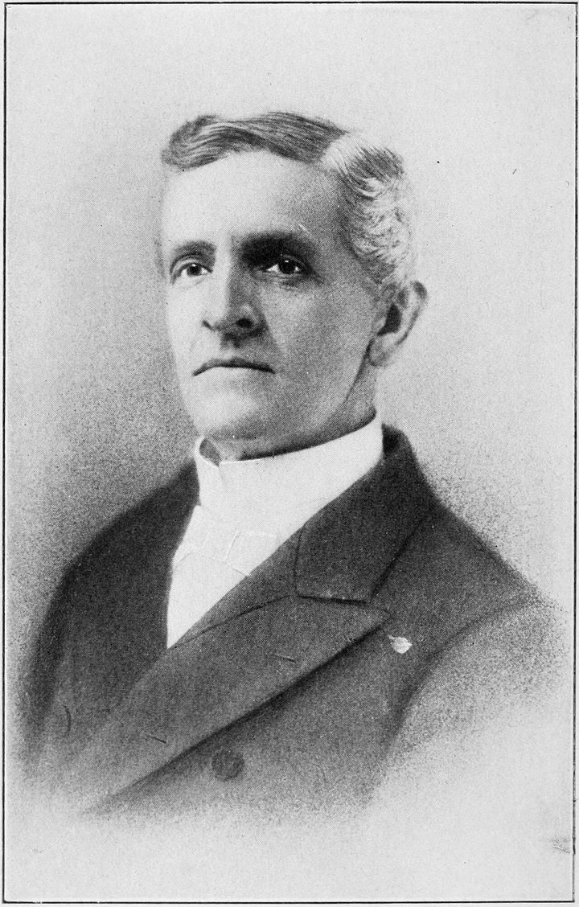

1858년 미국 펜실베이니아에서 태어난 아펜젤러는, 신학을 마치고 새로운 선교지를 찾던 중 조선으로 향했어요. 1885년 부활절, 그는 장로교의 언더우드와 같은 배로 제물포에 내렸죠 — 그가 도착한 부활절에 남긴 기도가 지금도 전해져요.
그는 도착하자마자 학교를 세웠어요. 1885년에 문을 연 <b>배재학당</b>은 한국 최초의 근대 사립학교로, 고종이 '유능한 인재를 기르는 집'이라는 뜻의 이름을 내렸죠. 신학문과 영어를 가르친 이 학교에서 이승만·주시경 같은 인물이 자랐어요.
아펜젤러는 <b>정동제일교회</b>를 세워 한국 감리교의 뿌리를 놓았고, 다른 선교사들과 함께 성경을 한글로 옮기는 일에도 힘썼어요. 학교·교회·번역 — 그는 '직접 전도'보다 이런 통로로 조선 사회에 다가갔죠.
1902년, 그는 성경 번역 회의에 가던 배가 다른 배와 충돌해 가라앉을 때 — 함께 탄 한국인 조사와 학생을 구하려다 끝내 돌아오지 못했어요. 마흔넷의 갑작스러운 죽음이었죠. 그가 세운 배재학당과 정동제일교회는 지금도 그 자리에서 그의 자취를 잇고 있어요.